01 / PRODUCTION FLOORProduction floor overview
Workroom view showing operators and active workstations.
A documentary photo gallery from the organised Manisha Overseas manufacturing image library. These photographs show the workroom, sewing operations, garment handling and stock storage that were supplied for the website.
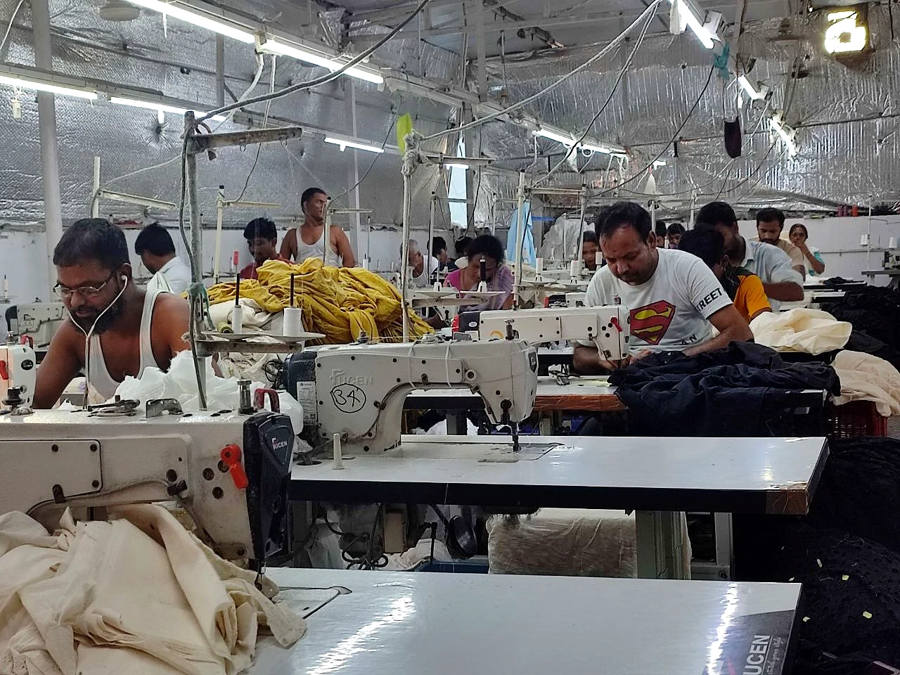
We have used the original manufacturing photographs provided in the organised asset collection—not stock images representing processes that have not been documented. The images are grouped according to what can be clearly seen in them.
Some exact tasks are not identified in the original image records. Where that is the case, the caption stays general rather than guessing whether a person is cutting, inspecting, embroidering or packing a garment.
Wide views of the production space and team working at stations.
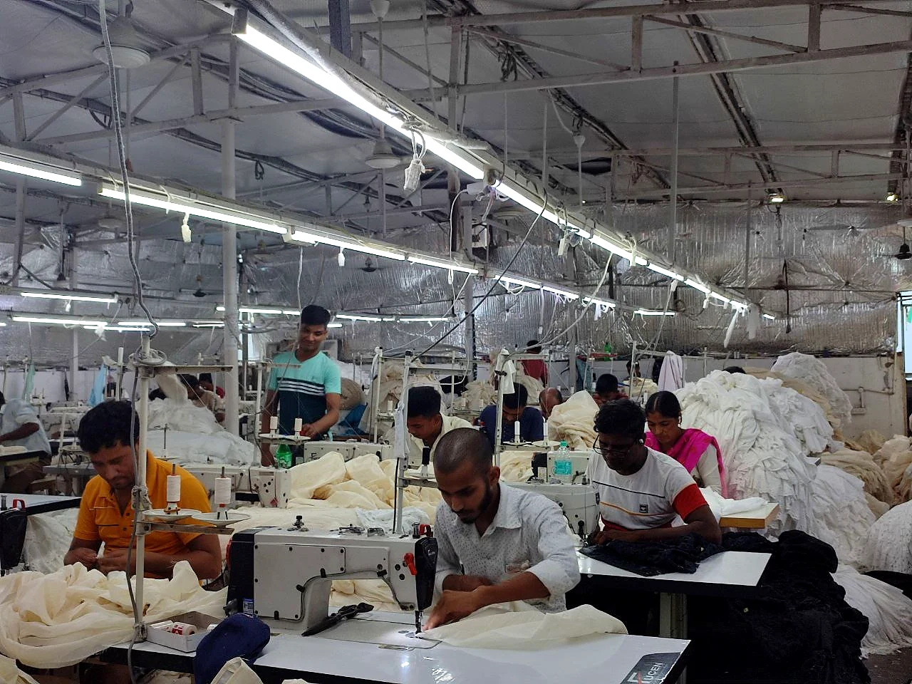
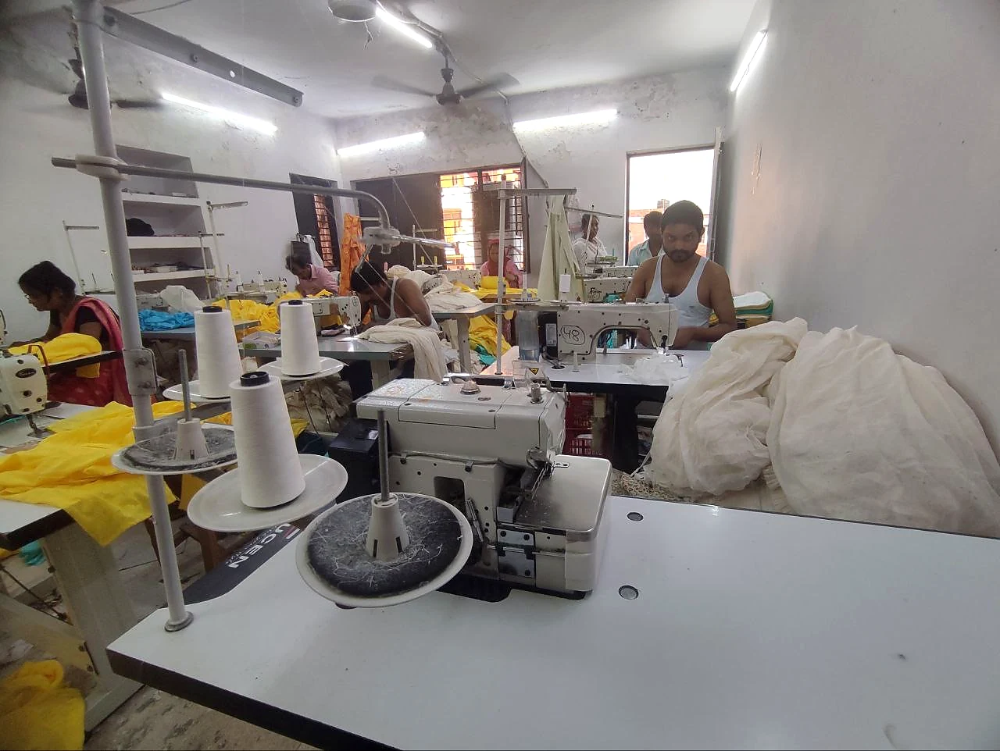
Photos of industrial sewing equipment and operators using workstations.
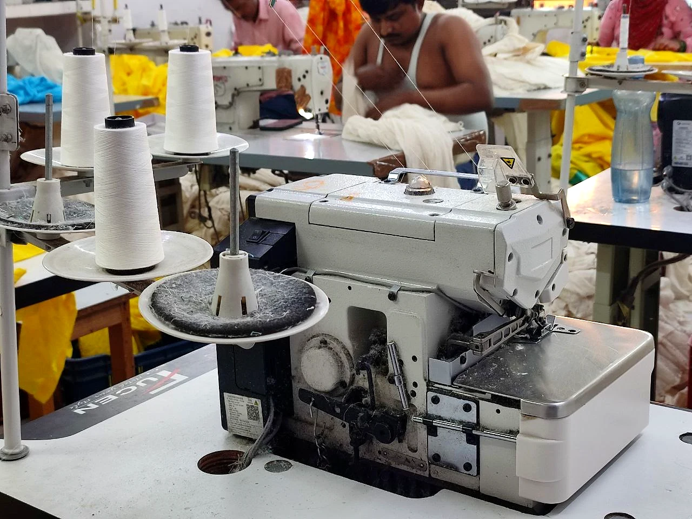
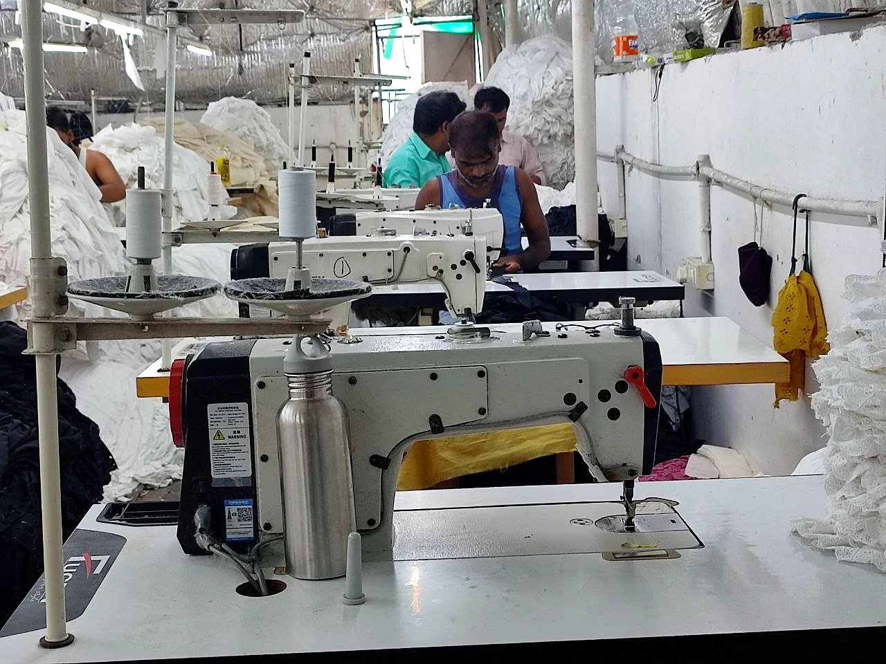
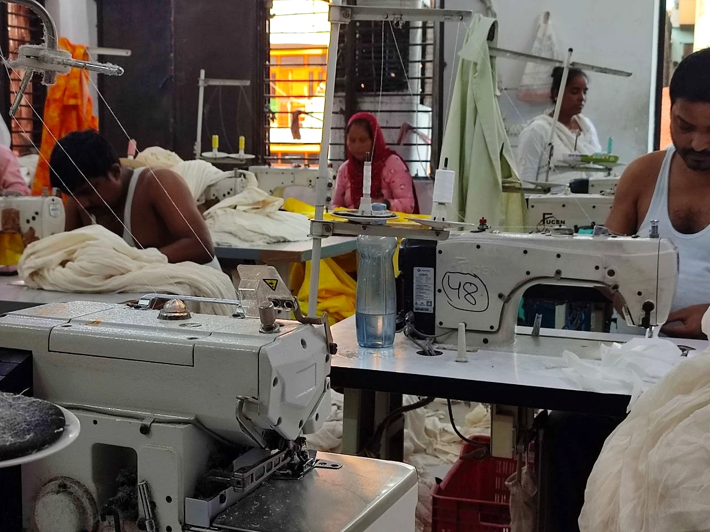
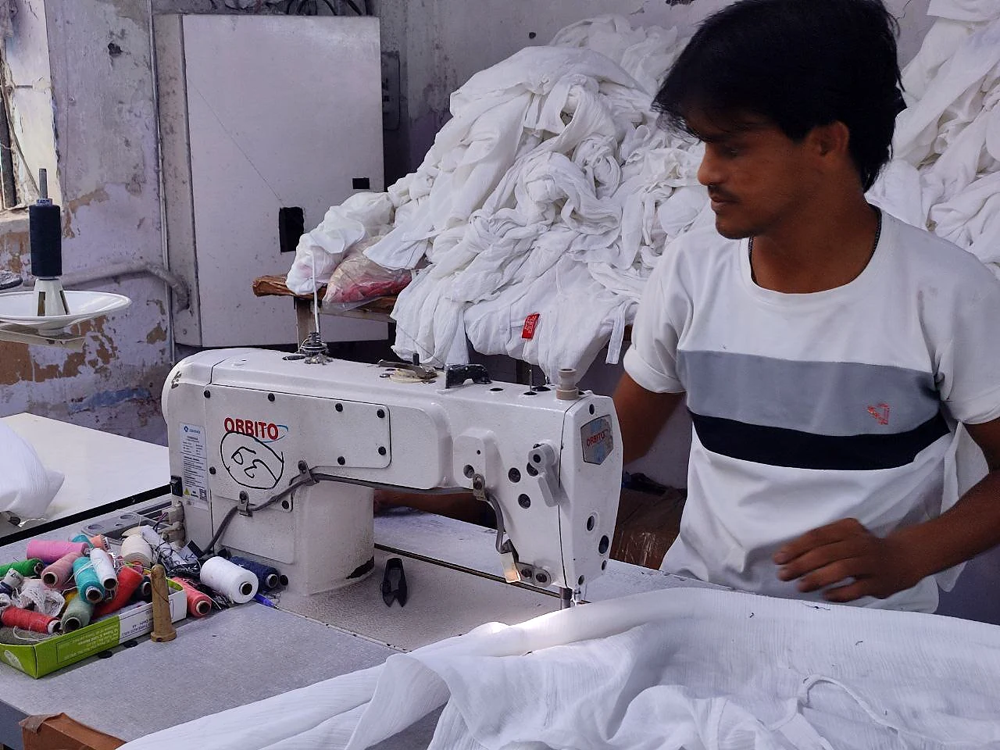
General garment and fabric handling photographs. These are not labelled as formal quality-control or cutting operations because the specific tasks are not confirmed.
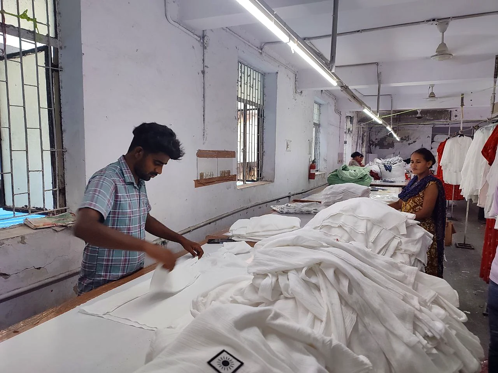
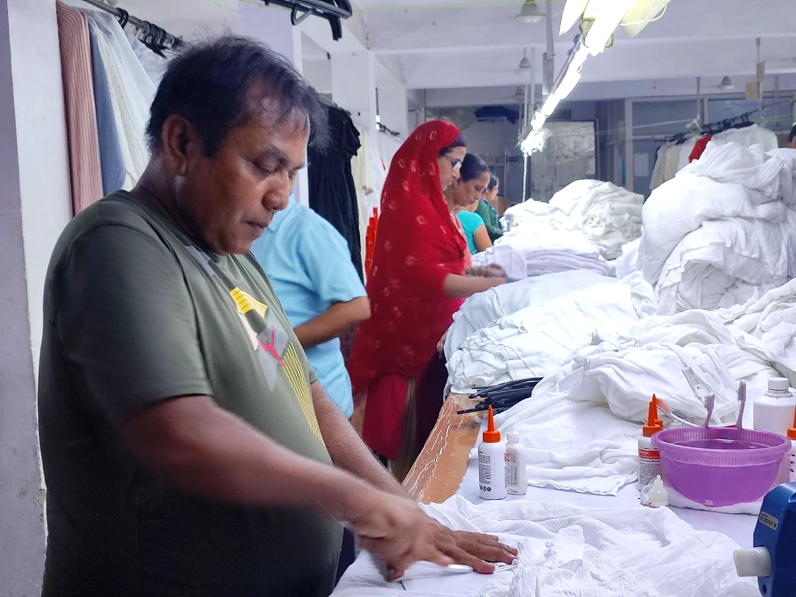
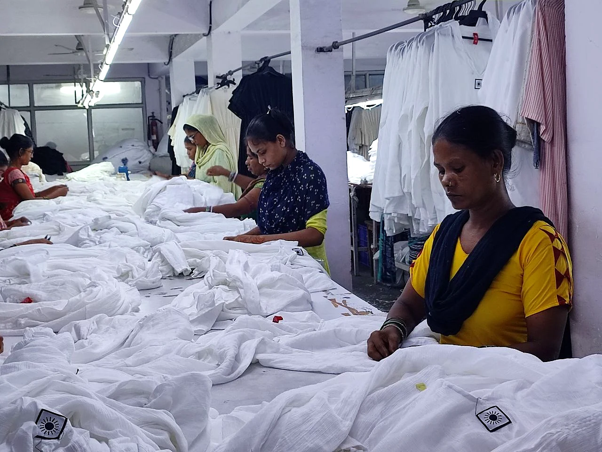
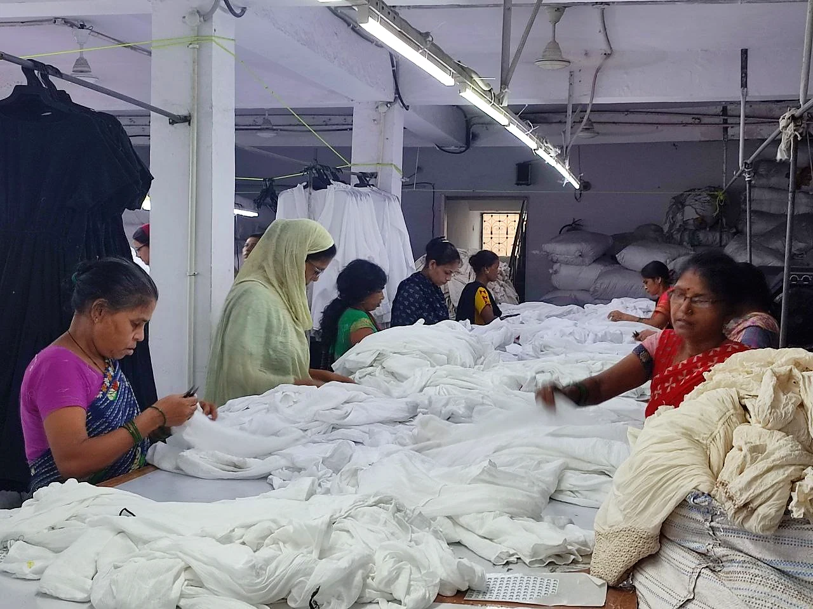
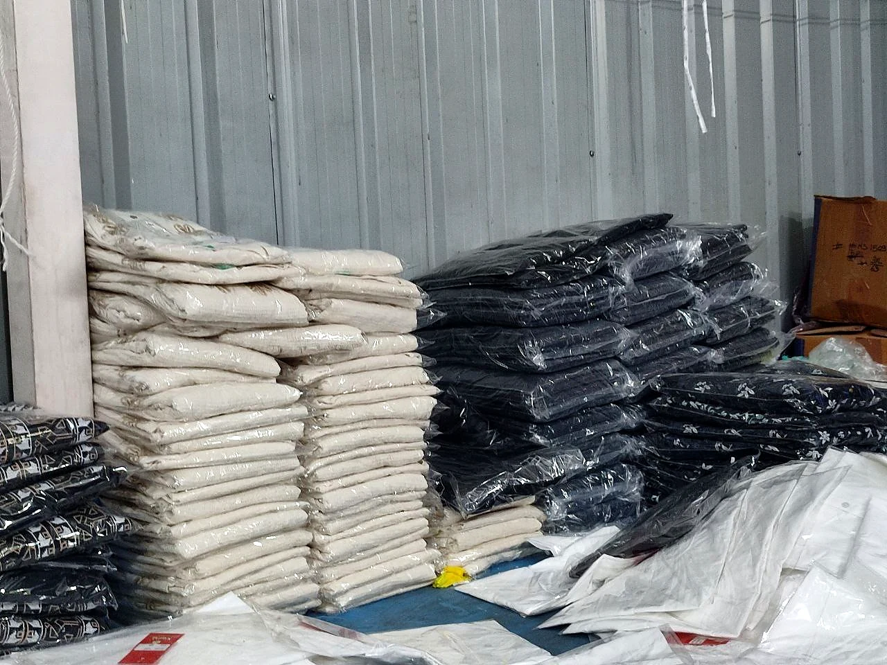
The current organised photo set does not include approved documentary photographs of Schiffli or embroidery machines, fabric cutting in progress, formal quality inspection, packing tables or export dispatch. We have left those stages unpictured rather than using unrelated stock images as proof.
When those original photographs are added to the library, this page can expand into a complete stage-by-stage factory story.
Discuss a manufacturing enquiry ↗